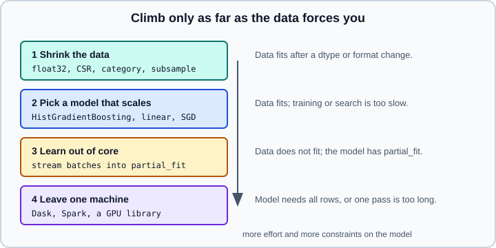

Scaling Strategies & Out-of-Core Learning
|
This content was generated with the assistance of AI and should be verified against the official documentation before being relied on in production. |
This page is a decision guide and a working recipe for data that is large for one machine’s memory or for your patience. The basics of partial_fit, the hashing trick, the list of incremental estimators and the general checklist for faster training are already in Performance and Parallelism; this page links to them and adds what is missing: how to choose a rung of the ladder, how to feed batches from files, how to evaluate a stream, how the SGD family behaves, and the ordering and epoch pitfalls that make out-of-core results silently wrong. It targets scikit-learn 1.9 on Python 3.13 and was checked against the official documentation on 2026-10-30.
Examples were run on Python 3.13 with scikit-learn 1.9.1, NumPy 2.5.4, SciPy 1.18.1, pandas 3.1.0 and pyarrow 26.0.0 (the Parquet reader) on 2026-10-31.
A ladder, not a single technique

Out-of-core learning is the third rung. Most problems are solved lower down, and the lower rungs keep the whole scikit-learn toolbox (pipelines, cross-validation, searches) available; the third rung restricts you to estimators that learn incrementally.
Rung 1: shrink the data you already have
-
Element type. Many NumPy-based estimators accept
float32arrays and keep them, halving memory. In scikit-learn 1.9.1Ridge,SGDClassifierandLogisticRegression(default solver) all keptfloat32coefficients when fitted onfloat32input; other estimators and solvers convert tofloat64. Measure the memory of your own pipeline instead of assuming. Integer or boolean columns that become one-hot encodings should stay sparse. -
Sparse formats. A matrix that is mostly zeros (text counts, one-hot encodings) belongs in
scipy.sparseCSR format, which most estimators accept directly. In the check below a 100,000 by 1,000 matrix with 1% non-zeros takes 8.4 MB asfloat32CSR and 400 MB as a dense array. Estimators that need a dense array fail or silently densify; look atOneHotEncoder(sparse_output=...)and the documentation of the estimator you use. -
Pandas dtypes. Convert repeated strings to
categoryand use the narrowest numeric type when reading (dtype=inread_csv); do this before building the array. -
Subsample while you explore. A learning curve (see Validation & Learning Curves) tells you whether more rows would improve the score at all. If the curve is flat at 20% of the data, the rest only costs time. Searching hyperparameters on a subsample, or with halving, is covered in Hyperparameter Tuning at Scale.
-
Fewer features. Selection and decomposition (Feature Selection, Decomposition) shrink the width, and random projection does it without fitting (see Cross-decomposition & Random Projection).
Rung 2: choose a model whose cost grows slowly
Training time depends on the model family far more than on tuning. As a rough guide:
| Model | Behaviour on large data |
|---|---|
|
Bins the features once, so cost grows roughly linearly with the rows; native handling of missing values; the usual first choice for tabular data above tens of thousands of rows (see Gradient Boosting). |
Linear models ( |
Linear in rows and features; |
|
Fit or predict cost grows faster than linearly in the number of rows; practical up to tens of thousands of rows. Use |
Random forests |
Linear in rows per tree but memory-hungry (deep trees store all the data they split); lower |
If the data fits in memory but a search is slow, the answer is usually one of the techniques of Hyperparameter Tuning at Scale, not out-of-core learning.
Rung 3: out-of-core learning
The conditions are those of the user guide: instances can be streamed, features can be extracted without seeing all the data, and the estimator implements partial_fit. The estimator table and the HashingVectorizer example are in Performance and Parallelism. What follows covers the parts that page leaves out.
Reading batches from files
scikit-learn does not read files; use a reader that yields NumPy arrays or sparse matrices. Two common choices:
-
pandas.read_csv(path, chunksize=n)returns an iterator of DataFrames. Give itdtype=so every chunk has the same, narrow types; letting pandas infer types per chunk can produce different dtypes in different chunks. -
pyarrow.parquet.ParquetFile(path).iter_batches(batch_size=n)streams record batches from a columnar file and can read only the columns you need (columns=). Parquet is also much smaller than CSV and keeps types.
The same reader function can feed both training and evaluation loops. The loop below does progressive validation: each batch is first used to measure the current model and only then to update it, so every prediction is made on data the model has not seen yet and no separate test set is needed for a first estimate.
import tempfile
from pathlib import Path
import numpy as np
import pandas as pd
import pyarrow.parquet as pq
from sklearn.linear_model import SGDClassifier
from sklearn.metrics import accuracy_score
from sklearn.preprocessing import StandardScaler
rng = np.random.default_rng(0)
n, p = 60_000, 10
X = rng.normal(size=(n, p)).astype("float32")
w = rng.normal(size=p)
y = (X @ w + rng.normal(scale=0.5, size=n) > 0).astype("int8")
df = pd.DataFrame(X, columns=[f"f{i}" for i in range(p)]).assign(label=y)
tmp = Path(tempfile.mkdtemp())
df.to_csv(tmp / "data.csv", index=False)
df.to_parquet(tmp / "data.parquet", row_group_size=10_000)
features = [f"f{i}" for i in range(p)]
classes = np.array([0, 1])
dtypes = {c: "float32" for c in features} | {"label": "int8"}
def csv_batches(path, size=5_000):
for chunk in pd.read_csv(path, chunksize=size, dtype=dtypes):
yield chunk[features].to_numpy(), chunk["label"].to_numpy()
def parquet_batches(path, size=5_000):
for batch in pq.ParquetFile(path).iter_batches(batch_size=size):
chunk = batch.to_pandas()
yield chunk[features].to_numpy(), chunk["label"].to_numpy()
scaler = StandardScaler()
clf = SGDClassifier(loss="log_loss", alpha=1e-5, random_state=0)
# test-then-train (progressive validation): score each batch before learning from it
for i, (Xb, yb) in enumerate(csv_batches(tmp / "data.csv")):
if i > 0:
acc = accuracy_score(yb, clf.predict(scaler.transform(Xb)))
if i % 4 == 0:
print(f"batch {i:2d} accuracy before learning: {acc:.3f}")
scaler.partial_fit(Xb)
clf.partial_fit(scaler.transform(Xb), yb, classes=classes)
print("rows seen by the scaler:", int(scaler.n_samples_seen_), " SGD updates t_:", int(clf.t_))
total = sum(len(yb) for _, yb in parquet_batches(tmp / "data.parquet"))
print("rows read from Parquet in batches:", total)Output:
batch 4 accuracy before learning: 0.914
batch 8 accuracy before learning: 0.929
rows seen by the scaler: 60000 SGD updates t_: 60001
rows read from Parquet in batches: 60000Details of the loop worth keeping:
-
The scaler is updated with
partial_fitand applied withtransform, so the whole stream shares one running mean and variance. Fitting a new scaler per batch would put every batch on a different scale. In the loop the batch is scored before the scaler and the model are updated with it, so the statistics used for scoring never include the batch being scored. -
classes=is passed on every call here, which is allowed; it is required on the first call only. -
The early part of the progressive curve is the warm-up of the model, not its final quality. Report the score after the model has seen enough data, and confirm with a held-out file that is never used for learning.
Mini-batch order and epochs
fit on SGDClassifier shuffles the data at every epoch and runs up to max_iter epochs. partial_fit does neither: it performs one pass over exactly the batch you give it. Two consequences:
-
The stream must not be ordered. A file sorted by label, by date or by customer shows the model one class at a time and it forgets earlier ones. Shuffle the file once before streaming, or shuffle the order of batches (and rows inside buffers) in the reader.
-
One epoch is often not enough. If the data can be re-read, loop over it several times, reshuffling between epochs.
import numpy as np
from sklearn.datasets import make_classification
from sklearn.linear_model import SGDClassifier
X, y = make_classification(n_samples=30_000, n_features=20, random_state=0)
order = np.argsort(y, kind="stable") # a file sorted by label: the worst case
Xs, ys = X[order], y[order]
classes = np.unique(y)
def run(batches, epochs=1, seed=0):
clf = SGDClassifier(random_state=seed)
rng = np.random.default_rng(seed)
for _ in range(epochs):
for Xb, yb in batches(rng):
clf.partial_fit(Xb, yb, classes=classes)
return clf
def sorted_batches(rng):
for i in range(0, len(ys), 3000):
yield Xs[i:i + 3000], ys[i:i + 3000]
def shuffled_batches(rng):
idx = rng.permutation(len(ys))
for i in range(0, len(ys), 3000):
j = idx[i:i + 3000]
yield Xs[j], ys[j]
print("sorted by label, 1 epoch :", round(run(sorted_batches).score(X, y), 3))
print("shuffled, 1 epoch :", round(run(shuffled_batches).score(X, y), 3))
print("shuffled, 5 epochs :", round(run(shuffled_batches, epochs=5).score(X, y), 3))Output:
sorted by label, 1 epoch : 0.5
shuffled, 1 epoch : 0.893
shuffled, 5 epochs : 0.907The sorted stream ends at chance level (0.5 with two balanced classes) because the last batches contain only class 1. The shuffled demo uses an in-memory array for brevity; with a file that does not fit you shuffle in the reader (for example by writing the data once in random order, or by holding a buffer of a few batches and drawing rows from it).
Behaviour of the SGD estimators
SGDClassifier, SGDRegressor and SGDOneClassSVM are optimisation methods, not model families: the loss decides which model you fit.
| Choice | Effect |
|---|---|
|
|
|
|
|
|
|
|
|
|
|
Supported, with a restriction for streaming: |
|
Early stopping on a held-out part of the data is a |
|
Apply to |
SGD is sensitive to feature scaling, so scale numeric features with StandardScaler (incrementally, as above), except features that already have a natural scale such as word frequencies. Sparse input is supported in any scipy.sparse format and CSR is the most efficient. The decaying step size means late examples count less than early ones; when the stream drifts (the relationship between features and label changes over time) a decaying learning rate adapts slowly, and a constant step with learning_rate="constant" or a periodically retrained model adapts better. Perceptron stays sensitive to badly labelled examples, whereas the SGD* family is more robust.
Not every incremental estimator behaves like SGD. Bayes classifiers (MultinomialNB, BernoulliNB) update count statistics and are exactly equivalent to a single fit on all the data, whatever the batch size. MiniBatchKMeans and IncrementalPCA depend on batch size and order. MLPClassifier and MLPRegressor offer partial_fit only with the "sgd" and "adam" solvers: with solver="lbfgs" the method is not available (accessing it raises AttributeError). See Neural Networks: MLPClassifier & MLPRegressor for when to leave scikit-learn for a deep-learning framework.
New labels, new categories and the hashing trick
An incremental classifier has a fixed output layout from its first call. A label that first appears in a later batch fails with ValueError: classes should include all valid labels that can be in y, which is why classes= must list every possible label up front. If you do not know the labels, one cheap pass over the label column (not the features) finds them.
For text and categorical features whose vocabulary is unknown, HashingVectorizer and FeatureHasher map features into a fixed number of columns with no state. The price is collisions: two different features share a column, and their counts add up. The check below uses a tiny space to make that visible:
from scipy import sparse
from sklearn.feature_extraction import FeatureHasher
from sklearn.feature_extraction.text import HashingVectorizer
docs = ["cheap pills now", "meeting at noon", "cheap meeting now"]
for n_features in (2**4, 2**20):
hv = HashingVectorizer(n_features=n_features, alternate_sign=False, norm=None)
M = hv.transform(docs)
print(n_features, M.shape, "non-zeros per row:", M.getnnz(axis=1).tolist(), "max count:", int(M.max()))
h = FeatureHasher(n_features=2**10, input_type="dict")
rows = [{"city": "Madrid", "plan": "pro"}, {"city": "Lyon", "plan": "free", "age_bucket": "30s"}]
print(h.transform(rows).shape)
X = sparse.random(100_000, 1000, density=0.01, format="csr", dtype="float32", random_state=0)
print("CSR MB:", round((X.data.nbytes + X.indices.nbytes + X.indptr.nbytes) / 1e6, 1), "dense MB:", 100_000 * 1000 * 4 / 1e6)Output:
16 (3, 16) non-zeros per row: [3, 2, 3] max count: 2
1048576 (3, 1048576) non-zeros per row: [3, 3, 3] max count: 1
(2, 1024)
CSR MB: 8.4 dense MB: 400.0With 16 columns the second document has only two non-zero entries, so two of its three words collided; with \(2^{20}\) columns (the default is \(2^{20}\)) nothing collided. Hashing is stateless, so the same text always lands in the same columns on every machine, but you cannot map a column back to a word. alternate_sign=True (the default) gives collided features random signs so that their contributions tend to cancel, which keeps expected inner products unbiased but makes counts negative; use alternate_sign=False for estimators that need non-negative input, such as MultinomialNB. Choose n_features large enough for the vocabulary and watch the memory of the coefficient matrix, which has one column per hashed feature.
Evaluating, saving and monitoring a stream
-
Hold out a fixed evaluation set that the stream never trains on, and score it every few batches to draw a learning curve over the stream. Progressive validation as in the CSV example is a useful complement, not a replacement.
-
Save checkpoints. A long run should dump the model, the scaler and the number of batches processed every so often with
joblib.dump, so that a crash resumes instead of restarting. Pair the files with the library versions, as described in Model Persistence. -
Do not tune on the stream you evaluate on. Tuning
alphaor the batch size on progressive validation scores optimises for the order of the stream. -
Callbacks. Per-batch progress reporting is possible in your own loop today; see Callbacks for the experimental callback API that is new in 1.9 and for what it supports.
Rung 4: when one machine is not enough
When the model needs all rows at once (exact random forests, kernel methods), when a single pass over the data is already too long, or when data lives in a cluster, you leave scikit-learn’s single-process model. The user guide’s page on related projects lists ecosystem libraries (distributed schedulers such as Dask, GPU implementations, Spark libraries); evaluate them against your constraint:
-
The scikit-learn Array API support runs some estimators on GPU arrays; see Array API & GPU.
-
Gradient boosting libraries have their own distributed and out-of-core modes; see HistGradientBoosting vs XGBoost, LightGBM & CatBoost.
-
Neural networks scale with minibatches by design and with data-parallel training; see Distributed Training and When to Move to Deep Learning.
-
Choosing among tools for data of different sizes is discussed in Choosing Tools.
The details of these projects change quickly; this page does not document their APIs.
Prediction at scale
Training is only half the cost. Latency and throughput of prediction (bulk prediction, sparse input, assume_finite, working_memory, model size) are covered in Performance and Parallelism and in the user guide’s page on computational performance. For serving a model outside Python see Exporting Pipelines to ONNX; for serving over HTTP see Model Persistence.
Common pitfalls
-
Calling
partial_fiton a batch withoutclasses=the first time, or with a label list that misses a class. -
Streaming data in file order when the file is sorted by label, time or key.
-
Fitting a scaler per batch, or fitting it on the whole stream before splitting off the evaluation set.
-
Treating one epoch over the stream as converged. Compare the score after 1 and after several epochs.
-
Using
class_weight="balanced",early_stopping=Trueorwarm_startassumptions copied fromfitintopartial_fit. -
Hashing into too few columns and not noticing the collisions.
-
Letting
read_csvinfer a different dtype in different chunks (an integer column that contains a missing value in one chunk becomes float). -
Mixing out-of-core training with a
Pipelinewhose transformers cannotpartial_fit: aPipelinehas nopartial_fititself, so callpartial_fiton each step by hand, as in the loop above.
Where older books and tutorials are outdated
-
Out-of-core examples from before scikit-learn 0.19 use
SGDClassifier(loss="log", n_iter=1). The parametern_iterwas replaced bymax_iterandtol, and the loss name"log"was renamed"log_loss"; the old name is rejected today. -
Older machine-learning books present out-of-core learning as the main answer to big data. Today many tabular problems of tens of millions of rows fit on one machine with
float32, sparse formats andHistGradientBoostingClassifier; check the lower rungs first. -
Code that imports
sklearn.cross_validationorsklearn.grid_searchto evaluate streamed models no longer works; usesklearn.model_selection. -
Examples that loop over
pandas.read_csv(..., chunksize=...)without adtype=argument can behave differently on different chunks.
References
-
scikit-learn user guide: Strategies to scale computationally: bigger data
-
Sebastian Raschka, Python Machine Learning, Packt, 2015, chapter 8 (structure of the out-of-core sentiment-analysis example only): https://www.packtpub.com/en-us/product/python-machine-learning-9781783555130